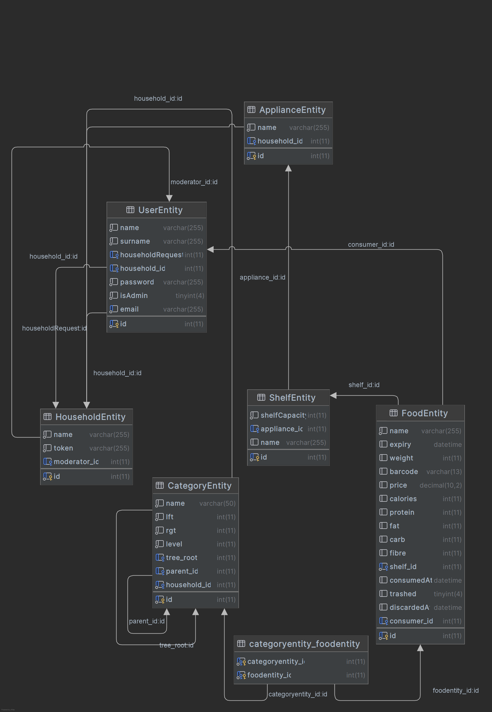

Přihlášení probíhá pomocí e-mailu. Administrátora vytváří databázová migrace,
ostatní účty vzniknou importem ukázkových dat ze skriptu naplneni_db.sql.
| Jméno | Login (e-mail) | Heslo | Role / domácnost |
|---|---|---|---|
| Administrátor systému | admin@spiz.local | Admin12345! | Administrátor systému |
| Jan Novák | jan.novak@example.test | Test12345! | Správce domácnosti Novákovi |
| Jana Nováková | jana.novakova@example.test | Test12345! | Člen domácnosti Novákovi |
| Petr Novák | petr.novak@example.test | Test12345! | Člen domácnosti Novákovi |
| Tereza Dvořáková | tereza.dvorakova@example.test | Test12345! | Správce domácnosti Studentský byt |
| Martin Svoboda | martin.svoboda@example.test | Test12345! | Člen domácnosti Studentský byt |
| Eva Procházková | eva.prochazkova@example.test | Test12345! | Člen domácnosti Studentský byt |
| Lucie Zelená | lucie.zelena@example.test | Test12345! | Správce domácnosti Zelení |
| Tomáš Zelený | tomas.zeleny@example.test | Test12345! | Člen domácnosti Zelení |
| Adam Černý | adam.cerny@example.test | Test12345! | Registrovaný uživatel, čekající žádost o členství u Novákových |
| Klára Veselá | klara.vesela@example.test | Test12345! | Registrovaný uživatel, čekající žádost o členství ve Studentském bytě |
| Ondřej Malý | ondrej.maly@example.test | Test12345! | Registrovaný uživatel bez domácnosti a žádosti |
Host může nahlédnout na potraviny v domáctnoti s využitím tokenu, který se nachází ve správě domáctnosti.
https://www.youtube.com/watch?v=jl8aXJk408g
Aplikace používá framework Nette. Presentery zpracovávají požadavky a formuláře,
zobrazení zajišťují přidružené šablony Latte. Cesty v tabulce jsou uvedeny
vůči adresáři src/app/Presentation/.
| Případ užití | Presenter |
|---|---|
| Registrace, přihlášení a vstup hosta pomocí tokenu. | Sign/SignPresenter.php |
| Odhlášení a společná kontrola přihlášení. | Accessory/AuthenticatedPresenter.php |
| Úprava vlastního profilu a hesla, opuštění domácnosti. | Account/AccountPresenter.php |
| Přehled domácnosti a členství, prohlížení obsahu domácnosti žadatelem a zrušení vlastní žádosti. | Home/HomePresenter.php |
| Založení a správa domácnosti, členů, žádostí a tokenu, předání správy. | Household/HouseholdPresenter.php |
| Prohlížení obsahu domácnosti hostem bez možnosti editace a ukončení přístupu hosta. | Guest/GuestPresenter.php |
| Správa spotřebičů a zobrazení jejich poliček. | Appliance/AppliancePresenter.php |
| Správa poliček a jejich nosnosti, přehled využité kapacity a potravin včetně historie. | Shelf/ShelfPresenter.php |
| Správa víceúrovňových kategorií potravin. | Category/CategoryPresenter.php |
| Správa potravin, konzumace, vyhození, obnova do zásob a načítání údajů podle čárového kódu. | Food/FoodPresenter.php |
| Vlastní profil spotřeby za zvolené období, souhrny kalorií, živin a ceny, časový graf kalorií a koláčový graf živin. | Consumption/ConsumptionPresenter.php |
| Administrátorská správa uživatelů, rolí, domácností a jejich členství. | Admin/AdminPresenter.php |
Datové operace zajišťují služby v src/app/Model/Services/,
databázové objekty a jejich vztahy jsou definovány entitami Doctrine
v src/app/Model/Entity/. Služba ProductLookupService
načítá údaje podle čárového kódu z Open Food Facts.

Předpokládáme archiv xvoldrv00.zip uložený na serveru
v ~/WWW/IIS/. Všechny následující příkazy se provádějí na serveru.
Potřeba je Apache s podporou .htaccess a mod_rewrite,
PHP 8.4.1 nebo novější s rozšířeními pdo_mysql a mbstring,
Composer 2, Node.js 22, npm a přístup k databázi MariaDB.
src/
přímo do adresáře aplikace, včetně skrytých souborů:
cd ~/WWW/IIS
unzip xvoldrv00.zip
cp -R src/. .~/WWW/IIS/ nainstalovat knihovny podle zámkového souboru
a sestavit frontend:
composer install --no-dev --prefer-dist --optimize-autoloader
npm ci
npm run buildcp .env.example .env.env nastavit env=prod. Proměnné
DB_HOST, DB_PORT, DB_NAME,
DB_USER, DB_PASSWORD a odpovídající
DB_DSN vyplnit podle přidělené produkční databáze
(vzorový host database nahradit skutečným hostem).
DB_HOST je adresa databázového serveru,
DB_NAME název databáze a DB_USER přihlašovací účet.
DB_PASSWORD zadat příslušné databázové heslo.
Doctrine a migrace používají DB_HOST a ostatní samostatné
proměnné; DB_DSN používá připojení Nette. Obě nastavení
proto musí odpovídat téže databázi.
Před první migrací nastavit také ADMIN_EMAIL
a vlastní ADMIN_PASSWORD s alespoň osmi znaky.
Při aktualizaci ponechat existující .env.
utf8mb4. Soubory aplikace musí být čitelné
pro webový server a adresáře temp/ a log/
zapisovatelné pro uživatele, pod kterým běží PHP. V ~/WWW/IIS/
připravit tyto adresáře a inicializovat databázi migracemi:
mkdir -p temp log
chmod u+rwx temp log
php vendor/bin/doctrine-migrations migrate --no-interaction
php vendor/bin/doctrine-migrations status.env;
příkaz status umožní ověřit provedení všech migrací.
Nejsme si vědomi žádné chybějící funkcionality